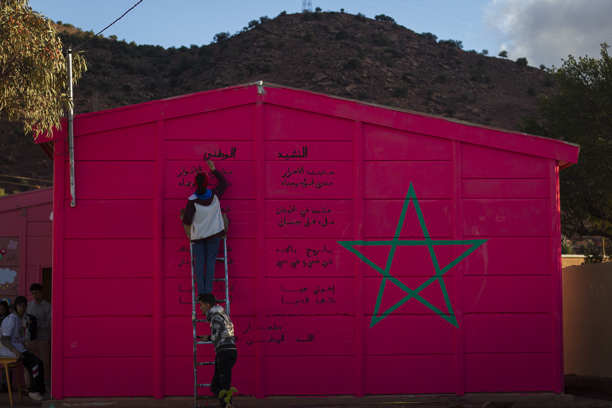
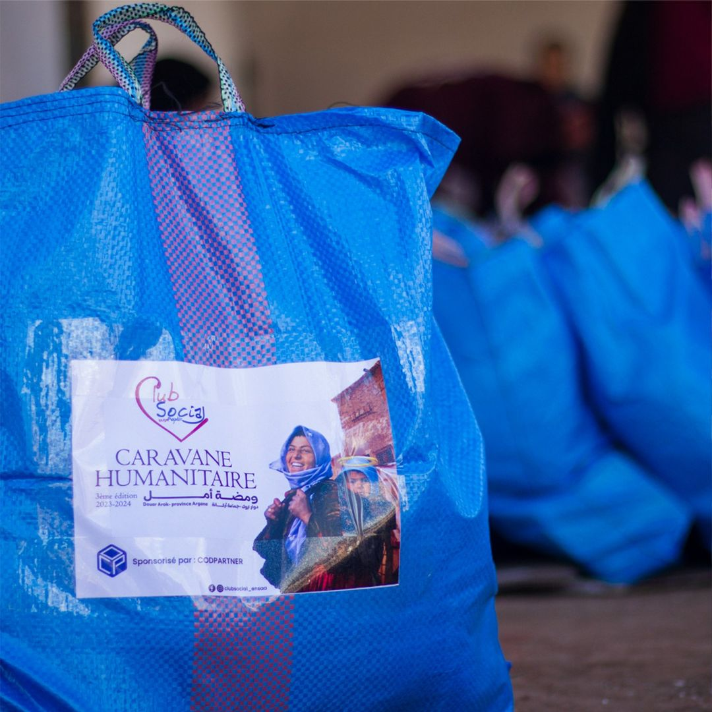

Au sein du Club Social, nous croyons fermement en l'importance de l'engagement communautaire. Chaque année, nous organisons plusieurs activités visant à améliorer les conditions de vie des personnes dans le besoin, en particulier celles des régions rurales du Maroc, qui sont souvent marginalisées et en manque de ressources. Voici quelques-unes de nos principales initiatives :
Nous organisons régulièrement des collectes de sang pour aider les hôpitaux et sauver des vies.

Nous fournissons des fournitures scolaires aux enfants des régions rurales, afin de leur offrir les outils nécessaires pour réussir.
Nous participons à des projets de réhabilitation d'écoles dans des zones défavorisées, contribuant ainsi à un environnement d'apprentissage plus sain.
Cette grande activité consiste à choisir un village où nous effectuons le nettoyage de leur école et de leur mosquée, tout en offrant des soins médicaux grâce à notre caravane médicale.


Nous organisons des distributions de paniers alimentaires pour soutenir les populations vulnérables.
Nous proposons des formations en animation et des cours de premiers secours pour sensibiliser et préparer nos membres à agir en cas d'urgence.
Nous collectons et distribuons des vêtements et paniers chauds aux personnes dans le besoin, notamment pendant les périodes hivernales.
Nous offrons des repas aux personnes nécessiteuses pendant le mois sacré de Ramadan et organisons des distributions de vêtements pour les fêtes de l’Aïd.
Acceuil